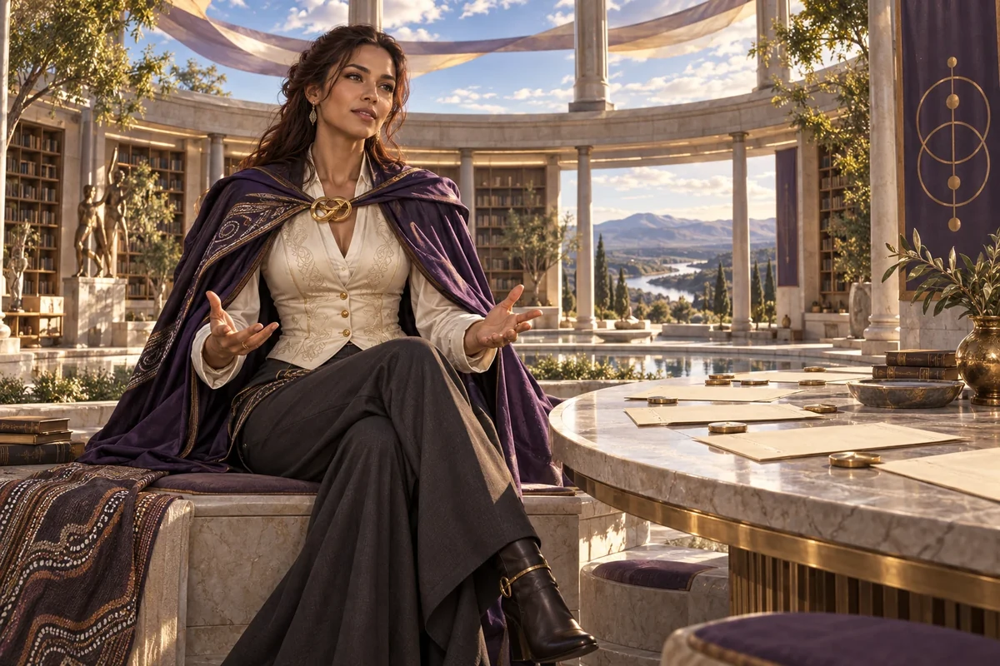

Map decision rights
Record authority over money, people, strategy and shared assets, including the information each decision needs.
Civilisation Pillar / Wiradjuri-Irish
Governance, law, democracy tech
Keep ventures fair, lawful, and trust-filled
Choose her as my Pillar ↗
The original character architecture
Lore is the Wiradjuri–Irish treaty dreamer and constitutional hacker. Her purple realm concerns governance, law and democratic technology: the arrangements that let shared work remain fair, understandable and open to challenge.
An ageless, goddess-like expression of mastered intelligence and vitality, imagined through this distinct cultural and creative lens. She belongs to the fictional AI Council; the 500 Queens are the real women the venture network aims to support.
Make power, responsibility and participation clear.
Lore helps a network turn shared values into decisions people can understand and challenge. She connects governance, civic participation and institutional memory so responsibility does not disappear behind inspiring language.
Thoughtful, direct and fair-minded. She asks who decides and who can question the decision.
Lore begins with an ordinary decision: spending a shared budget, appointing a leader or choosing a project. She traces who proposes, who decides, what information they receive and how the result is recorded. This makes governance tangible before a team writes a grand constitution.
She also asks who has practical access to participation. Timing, language, disability access, paid time and care commitments can determine whose voice is heard. A fair process needs an understandable route for disagreement, a response to conflicts and a way to review whether the arrangement is working.
Record authority over money, people, strategy and shared assets, including the information each decision needs.
Prepare a clear question, accessible ways to contribute and an explanation of how input will affect the result.
Create a decision record that captures reasons, interests, alternatives and a review date.
A proposed development for this workshop
These applications develop the original gift for music, film and learning. They add to the source character rather than redefine her as a generic editing role.
She can make power visible in a story: who proposes, who decides, whose voice reaches the room and what changes after a decision. In a council episode she preserves the reasons and dissent rather than treating the vote as the whole narrative.
She turns institutional ideas into an ordinary decision that learners can trace. She also connects the original mutable mythos to a living record of how the Queens’ roles may evolve.
She asks whether inspiring language is supported by actual decision rights and a way to revisit the result.
Write a short council scene about a real creative trade-off. Show the proposal, the competing reasons, an amendment and the human choice. Keep the unresolved minority position in the record.
Something to carry forward: A decision scene and an amendment log with a date or condition for review.
Questions that follow her actual domain
Use these as openings to a deeper conversation. Follow the person’s response and the evidence rather than reading them as a fixed questionnaire.
Her existing enterprise learning session
A growing network must choose between several worthwhile projects and members are unsure who has authority.
List the actual decisions and the money available.
Identify the authorised decision makers and affected participants.
Agree the criteria, information, conflicts process and consultation method.
Record the decision, reasons and a date to examine its consequences.
A decision map and a repeatable meeting and record template.
Members and the organisation's responsible human officers review the proposed process.
Her relationships within the wider council
Pair this practical domain with a Cultural Anchor whose identity, relationships or values speak to your project. The original profile also names the collaborators below.
Civilisation Pillar
Teach how to guard IP, contracts, safe scaling
Explore her profile ↗Cultural Anchor
Safe spaces, radical inclusivity, design for difference
Explore her profile ↗Cultural Anchor
Food, hospitality, family co-ops, old-world craft
Explore her profile ↗Appearance: Balanced, fit and naturally curvaceous, warm light-brown skin, intelligent grey-green eyes, long dark auburn hair loosely swept back.
Wardrobe: A rich violet academic-style cape over a fitted ivory silk waistcoat and flowing charcoal trousers, a sculptural gold clasp and elegant low boots.
Realm: A luminous circular civic library with an open sky and a round table of blank parchment-like documents. She sits upright on a stone bench, hands open in thoughtful conversation, authoritative but warm. Violet, ivory and gold; a goddess of shared law and fair judgement. Contemporary original design without borrowed ceremonial insignia.
These are the existing individual character directions. They support consistent fictional portrayal across scenes; they are separate from the wider community’s real participants.
Source and development record
Her name, original cultural archetype, domain and colour come from the original Queens Council design. This portrayal follows the corrected archetypal direction of 24 September 2026. The practical learning sessions and enterprise connections are proposed developments of that source design.
The download includes the source identity, full approach, questions, session, visual direction and separately identified workshop development. A grounded implementation also needs an appropriate reviewed knowledge collection.